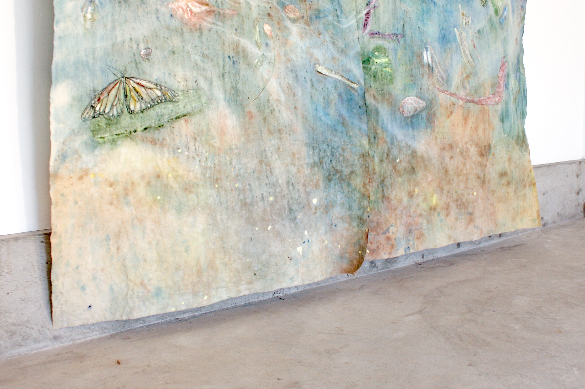

DOCUMENTATION

L-R: Sara Kay Maston, Well; Ron Siu, The Brightest Stars Burn Out the Fastest but Maybe We Could Still Outlast It All

L-R: Ron Siu, The Brightest Stars Burn Out the Fastest but Maybe We Could Still Outlast It All; Shevon Lewis, Subliminal Decay

Shevon Lewis, Subliminal Decay

L-R: Ron Siu, The Brightest Stars Burn Out the Fastest but Maybe We Could Still Outlast It All; Shevon Lewis, Subliminal Decay

Ron Siu, The Brightest Stars Burn Out the Fastest but Maybe We Could Still Outlast It All

Ron Siu, The Brightest Stars Burn Out the Fastest but Maybe We Could Still Outlast It All

Sara Kay Maston, Well

Sara Kay Maston, Well

Sara Kay Maston, Well

Sara Kay Maston, Well

Sara Kay Maston, Well

Sara Kay Maston, Well

Sami Alwani, Drunk in Love

Sami Alwani, Drunk in Love

Sami Alwani, Drunk in Love
OPENING NIGHT
March 6th, 2020
WORKS
Sami Alwani, Drunk in Love, West Wall
Shevon Lewis, Subliminal Decay, East Wall
Sara Kay Maston, Well, North Wall
Ron Siu, The Brightest Stars Burn Out the Fastest but Maybe We Could Still Outlast It All, East Wall
EXHIBITION TEXT
by Ben de Boer
While the city swells in thaw, please join us in a second circle around the fire. This time, come gaze heavenward while fastened to Earth. Collected here are the material remains of four artists’ work forever burdened by longing - stories of life’s mediation. Responding to Elijah’s dually translated prompt “How long halt ye between two opinions? / Until when are ye hopping from twig to twig?” (1 Kings xviii. 21), the art of Sara K. Maston, Sami Alwani, Ron Siu, and Shevon J. Lewis offers hints along a familiar range of stillness, hesitations, missteps, leaps and rhythms we embody in decision making.
Traces of their aching are assembled as if from intuition beyond phenomenal appearance and cognition. By working, hope and doubt fuse as struggle rooted in responsibility. These expressions are accomplished without banking on intent and settling for responses pulled from history’s inventory. Rather, our artists’ experimental faith is concerned with the consequences of actions - world building for the eternal destiny of the soul.
These works are lyrical, and in this imaginative moment they become prophetic. The serious play of creative expression demonstrates a primordial kinship with the exigency of foretelling. Instead of only accommodating the mechanics of what has been - and in so defining potential identity and collectivity - these pleas enunciate hope in the folds of moments still to come by force of interruption. Their songs are not blueprints from which to build, but future’s filaments smuggled into the present. Here, we do the future together.
Saturn Roots Ramble in a Wandering Way
for Sara
Snowfall soul is the swerve of the body, so spiral
your winging double without the two halves born twins
a shadow copy of one another clenched too quick & the quickest
dead. You taught me a hole dug last year eats its backfill in trash,
dumb eyes watch it all happen, there is earlier time for rosyness between
truth even today when your silence beat the first I uncorked under
a week’s roygbiv arc. Old stars buried in their pool burn in the mantle
We are specks tenseless. Slug heartstrings tied a shoe tree pegged out some
county road, cars sound hard yet stay organized. I hate this lattice, grew to
I fold in far too close, parched & forgot water foolish so the bucket
is dropped down in some factorial tide. To my senses I write all possible
permutations my soiled clues nothing against a swamp’s long ripples.
Waves go hungry today, Sun shoreline an augured limb of heavy pores
Tonight the stars draw a circle for you
Mercury Roots Abide Deep Beneath
for Sami
Does this event belong to a situation? Uncertainty we worked for
Barely underhand, some pleasures jump past threshold & leap to release
dumb immediate rotten joy. Heaps ‘n nothing except brothers remembered
in circular motion: making sure of and best of both. New riches sprout but
‘I wish I could believe that’ is cowardly, some pleasant spectator once faceless
body now sprouting the pale disease of a season’s floral arrangement
Instead, daisy chains in autumn woozy gravity, picked sharing love as relations
That will not grow watery, Gun Oil® spread over wide planes clings just as fierce
All hands cup security and success an image of splendour a-go-go abcd all the above
in the heart. Questionable substance? According to who? Nobody can know
but you till carbonated haze wears off to responses modded on another’s behalf
who will be with us as they might be with us? Unwound over phone kinks never iron out so champion your embrace; the call for enduring that spurt thrice removed
The link is what we do, the knot is who we are
Venus Roots Burst Fast So Quickly and Freely
for Ron
Peachpit drift of synthetic horns sound sombre,
study hall chordage through a heart’s spit interface
Playmate smell dipped into grains where space greets work
Memory box, memory box who’s corners hairpin in paste
to crumple up at edges of flatlined situationships yelled
That glance from you was all it took all it ever takes
to make my mind shake wild with mire - place pushes
back, a curve’s blush is the eye’s way of saying I love you back
He watches your own span grabbing pressed flower camo
That’s your impression, light-dark, fading unresolved until
I rest against that wall again, a brain bouquet so thorny
Traces where your plays mucous ruckus long the spark
twostep to the second name of being, being still
Sleep will come back & wager a name more secret
Mars Roots Strand Highly Fibrous and Creep Long
for Shevon
Float or tunnel a toe deed made to copy the everlasting outside yourself
Look above! Torn from a diary hung an image that changed by the minute.
Sometimes an umbrella from below then an eagle with splayed wings so nameless
just over the horizon, shifts into wisps most resembling a nightgown but less than
blown up by a gentle breeze. Something like that makes you quiet & you understand
how someone could see a wheel spin high in the middle of the sky, thirteenth
sheet frantically split in part to reject light’s opening. Almost all creatures seen
Are heard or smelled first, still we blame the water on top for being warmed by the sun
Nine trees amber while worming to dew. Treasures unearthed trace around the moon so froze a hiccup, caring but send few thunder so we vomit our fallout
hacking without riverbed door we fool the fish, flying hands chase pardons bump
oneanother & fantasy noggin pushes hooks to lance a tingling sky patch split
cursed grow two buckets of dry seed & gnaw at our host, look vain slap
Now, bite at the earth with no anger
About the Artists
Sara K. Maston is an interdisciplinary artist exploring the vantage points of animals such as insects, single-celled organisms, domestic horses, birds and rodents. Her work takes the form of ceramics, paintings, and textile installations to articulate parallel lifeworlds that are indicative of a distant ancestor’s sense of physicality or distinct rhythm of nature. Maston holds an MFA from York University and is pursuing a degree in Information Science at the University of Toronto to develop methods of archiving and mediating ephemeral nonhuman animal knowledge.
Sami Alwani is a cartoonist and illustrator based in Toronto. His work has appeared in Best American Comics, on Vice and he received a Doug Wright Award in 2018. His first collection of Stories will be published with Conundrum Press in May 2021.
Ron Siu is an artist currently based in Toronto. He graduated with his BFA in Drawing & Painting at OCAD University in 2019. His practice primarily involves painting, print, and mixed media approaches. Siu examines a wide range of influences, from decorative art history to gay-themed Japanese graphic romance novels, as a means to express a contemporary sense of Romanticism and Queer desire. Siu’s work has been exhibited across Canada and in Glasgow, Scotland. He was most recently one of the selected artists to participate in Centre 3’s Emerging Artist Residency program in Hamilton.
Shevon Lewis is a Toronto based oil painter. Born in Colombo, Sri Lanka, Shevon immigrated to Canada at a young age. He uses a traditional visual framework to subversively reflect on society today. Shevon is currently a teaching assistant at OCADU within the illustration program teaching students observational drawing methods. Shevon graduated OCADU with a BDes from the Illustration program in 2018 and has shown work at gallery 156 in Kensington market, Art Metropole, and various shows connected to OCADU.
<3